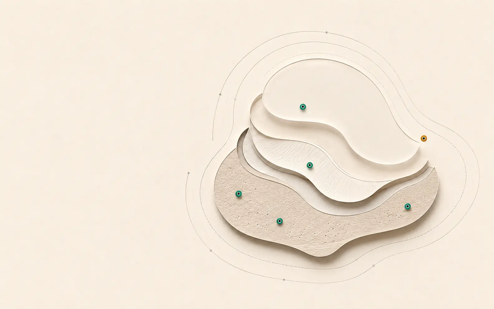

Evidence position
Plausible mechanism. Preliminary signal. No controlled efficacy result yet.
The literature supports continued investigation—not a treatment claim. WinVerse™ separates what is known, suggested and still unresolved.
MechanismSupported
Clinical signalPreliminary
Controlled efficacyUnresolved

Current verdict
Hypothesis-generating
MechanismSupported
Clinical signalPreliminary
Controlled efficacyUnresolved